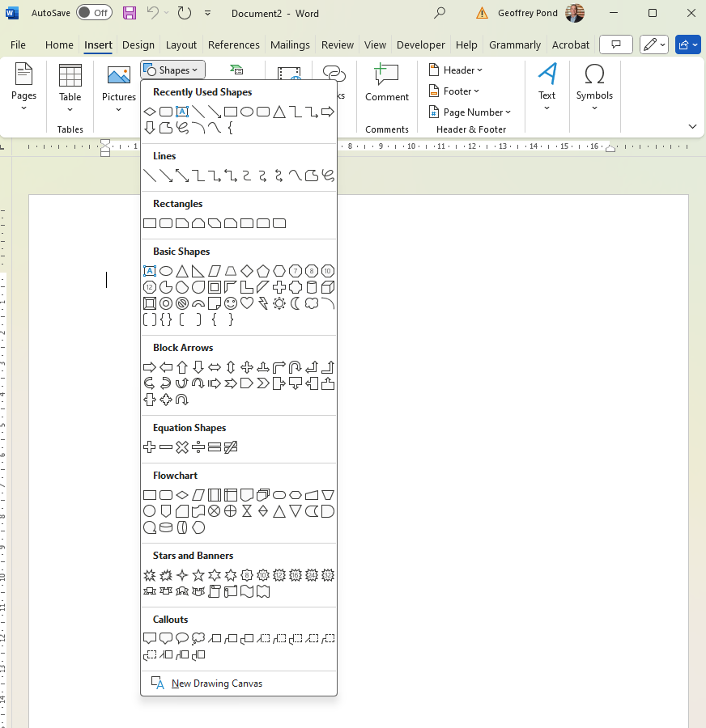

In my experience, an indispensable aid in designing and improving a process is the process flowchart. It's often said that a picture is worth a thousand words and the flowchart is no exception. It can be difficult to describe a process using text alone. I've often worked with clients in meetings to understand a process. After mapping it out in a flowchart and presenting it to a client, I'm invariably told that this isn't quite right or that there are exceptions to this or that. I find that the flowchart is a critical "communication" tool between myself and my client before I launch any further study of the process. If my understanding of the process is flawed then all the subsequent analysis I might do is useless. The flowchart helps avoid this.
There are numerous programs that can be used to create flowcharts but they're largely unnecessary. Microsoft Word does a fine job although it might be a bit slower and more tedious. From the "Insert" menu, click on the "Shapes" button in the ribbon. As illustrated below, one of the groups available is entitled "Flowchart". This provides more than what is necessary for the vast majority of applications.

There are many possible symbols to use in a flowchart but a small subset of those make up about 95% of those appearing in a flowchart so we will focus on those. Typically (but not always), an oval shape is used to denote the start and end of a process:

Individual process stages are indicated by rectangles:

The direction of flow through process stages is indicated by arrows:
Buffers are temporary storage of flow units (or WIP). These can be a warehouse, storage room or as simple as a bin or table in advance of the next process stage. They are typically illustrated using an upside-down triangle although I've seen plenty of instances where a normal triangle has been used:
There is a saying an ops: "Buffer or suffer". If you're unsure whether a buffer exists in advance of a process stage, it's smart to simply include as part of the process flowchart. The worst case scenario is that the inventory volume in the buffer is zero and that the flowtime through the buffer is zero (because it doesn't really exist in reality). However, if a buffer does exist in reality but isn't included in your flowchart, your subsequent analysis will be flawed (it will underestimate the inventory volume throughout the process and underestimate the process flowtime).
Many processes include decisions. A common one is a quality assurance check. If the item meets quality specifications, it continues the process (or leaves the process if the QA check is the final process stage). Conversely, if the item fails the QA check, it often returns to an earlier process stage for "rework". Such decisions are modelled in a flowchart by a diamond shape:
These symbols are then combined to model the process. A common question is "should the flowchart be a micro- or macro-level depiction of the process?". For example, should I include every step the worker makes...

Or should a more macro-level view be taken:

My advice would be to keep the objective in-mind. If the objective is to provide work instructions to an employee, the more detailed approach may be better. If the objective is to determine the performance of an organization (e.g., a warehouse), then the latter illustration is sufficient. Typically in operations, we want to improve the utilisation of our available resources. Consequently, what is most interesting to me is the amount of time a specific resources (e.g., the forklift driver) is engaged in adding value to the process. In that context, all I need is the simpler illustration since the same resource is doing each of the constituent tasks illustrated in the more detailed image.